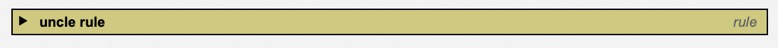
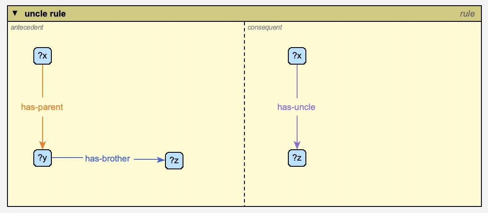
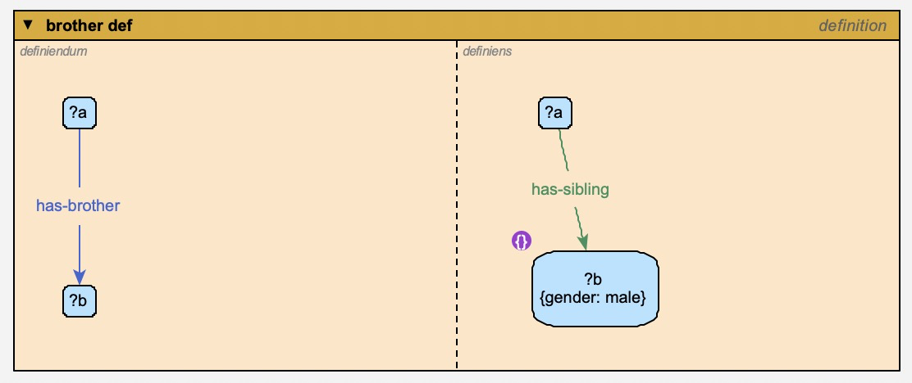
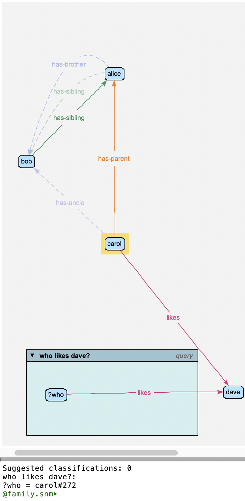
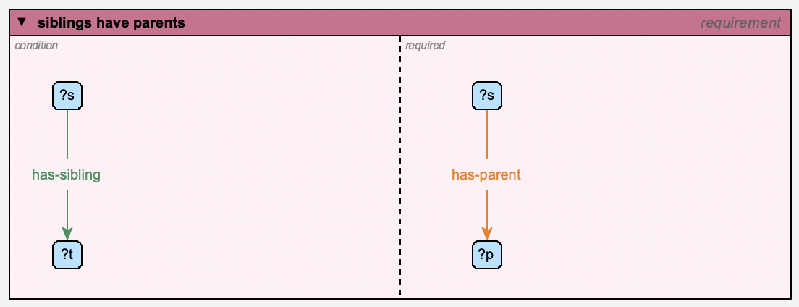

Contexts: Rules, Definitions, Queries, Constraints and Requirements¶
A context is a node that contains other objects: a little network of its own, standing for a pattern rather than for facts about the world. The system model defines five kinds:
kind |
what its contents mean |
|---|---|
query |
a pattern to look for: “find everything that matches this” |
rule |
an antecedent and a consequent: “whenever the antecedent matches, conclude the consequent” |
definition |
a definiendum and a definiens: “the one means exactly the other” – a rule that works both ways |
constraint |
a pattern that must not match: “each match is a problem” |
requirement |
a condition and what’s required: “wherever the condition matches, the required part must hold too” – a kind of constraint |
(context itself is the general kind: a context that’s none of these simply contains things.)
To make one, use model | new instance of Node on the background menu and choose query, rule, definition, constraint or requirement (or a subtype of one of them).
Context windows¶
A context is drawn as a window: a box with a title bar, holding the objects it contains.
The title bar shows the context’s name and, in italics, its kind.
A rule’s window is split into two panes, antecedent on the left and consequent on the right; a definition’s into definiendum and definiens; a requirement’s into condition and required. A query, a constraint (or a plain context) has a single pane.
The triangle at the left of the title bar collapses the window to its title bar (and expands it again). The contents of a collapsed window are hidden.
Resize a window by dragging its corner handles, like any other object. Its contents stay put.
Dragging the window carries its contents along with it.
Right-click in a pane for the new instance of / new subtype of menus, as on the background: what you make goes where you clicked, in that pane (eg: into a rule’s antecedent) – so a rule can be edited in place. The window’s own menu (answer query, gather, …) is on its title bar. Relations drawn between things in a pane go in it too, and make relation to… picks what’s under the pointer, in a window or not.
gather (on the window’s menu) brings in everything the context contains that isn’t in its window – each into the pane its containment says (antecedent, consequent, …), and the variables its relations use along with them. Things just outside are nudged in; things from further away are set out in rows, with room for the labels of the relations between them. If there isn’t room, the window grows. It’s one command, so one undo puts everything back.


A collapsed window: just its title bar. Click the triangle to expand it again.¶
Containment is shown by position: the relations that say the window contains an object (contains, antecedent, consequent, …) aren’t drawn for the objects inside it.
Putting things into a window¶
Drag an object into a pane to make the context contain it – in that pane’s role: dropped in a rule’s antecedent pane, it’s part of the antecedent. Dragging it into the other pane switches its role.
Drag it out of the window to remove it from the context.
A relation drawn between two objects, whose label lands in a pane, is contained in that pane too. A contained relation’s label, while it floats (follows its ends), stays in its pane, even if one of its ends is moved outside the window. To take the relation out of the context, drag its label out.
You can also say it explicitly: draw a contains (or antecedent, consequent, definiendum, definiens) relation from the window to an object. This is the way to put an object in both of a rule’s panes, or to have a context contain something that stays outside its window (its arc is then drawn).
Windows can be nested: an object dropped where windows overlap goes into the innermost one. A window goes only into a plain context, though: one dropped on a rule, definition or requirement isn’t put in it, but pushed off it.
A window holds only what its context contains – and the relations between things it holds (eg: a pattern relation’s isa link to its type variable), which needn’t be contained themselves. Anything else that ends up in it – a window dropped or expanded over it, an object dropped half on its edge, its containment removed – is pushed out, the least way, onto a free spot if there’s one near (staying in its own pane, if it’s in another window). Of two windows dropped on each other (neither in the other), the smaller is pushed off, carrying its contents. A relation’s label that floats between its ends keeps out of windows that don’t contain it. This happens when a change is made – a drop, not while dragging – and is undone with it.
A variable means something only in its pattern, so one that’s outside the window it belongs in (eg: placed by show all, or in a view saved that way) is put back in it, in its pane, at the next change – the window grows if there’s no room.
The layouts (arranged now, or kept arranged) don’t arrange what’s in windows, and don’t put anything on a window: a window that what they arrange would land on is moved aside, the least it takes, carrying its contents.
Variables¶
Inside a context, an object whose name starts with ?, ^ or ! is
a variable: it matches any object that fits everything the pattern says
about it. In a query ?p -likes-> mary, ?p matches everyone who likes
mary.
Say what type a variable must be in the usual way – an isa from the
variable to the type (?p isa person). A variable used in several places
must match the same object in all of them, so ?x -has-parent-> ?y, ?y
-has-parent-> ?z matches grandchildren (?x) and their grandparents
(?z).
The first character of a variable’s name says what it matches:
|
an individual variable: matches individuals |
|
a type variable: matches types (so |
|
an “any” variable: matches individuals and types alike |
Make an individual variable an individual, and a type variable a type: the
name decides what it matches, but the reasoner warns about a mismatch (a
type named ?x, or an individual named ^T). The warning, in the
object’s error report, offers to fix it either way: make it an individual
(or a type) – what its name says – or rename it for what it is (eg:
^x). Both can be undone. (An object with instances or subtypes, or a
relation, can’t be changed to the other kind: only renamed.) A variable used as a
relation’s type, eg: ^r in !a -^r-> ?b, matches relation types.
Objects in a pattern that aren’t variables (mary, above) stand for themselves.
A variable only means something in a pattern: one that isn’t in any query,
rule, definition, constraint or requirement – eg: a node named ?mother2
to say that two people have the same unknown mother – is ignored, with its
relations, and the reasoner warns about it. Give an unknown object an
ordinary name instead (eg: Ed’s mother).
A variable whose name starts with _ after its ?, ^ or ! –
eg: ?_brother – is hidden: it matches as any other does, but a
query’s answers don’t report it, and each answer is given once. Eg: ?sibling
-has-full-brother-> ?_brother answers who has a full brother (once each,
however many they have), not who the brothers are. If all of a query’s
variables are hidden, the answer is just “yes” or “no”. (Names still say
which variable is which: two ?_ in a pattern are the same one.)
Constraints¶
A variable can also carry constraints: conditions on its attributes. They are written as a comma-separated list:
constraint |
means |
|---|---|
|
has the attribute alive (with any value) |
|
has age equal to 30. A value is a number, |
|
has age equal to the value of every other constraint
that uses |
|
(of a relation type) is tagged symmetric;
|
|
the opposite of any of these: |
A not is true of anything the model doesn’t say otherwise about: not
gender: female matches something with no gender at all, as well as one
whose gender is something else. To leave out the ones with no gender, say it
has one, too: gender, not gender: female. A key can have more than one
not (not colour: red, not colour: blue), and a not with a value
variable (not age: ?a) needs the same variable used without not
somewhere in the pattern, to give it its value.
You can type them with the variable’s name when you make it, after
:where::
?p :where: alive, age: 30
They’re stored in the variable’s constraints attribute, which has its
own row in the attribute editor, where you can change it. (You can also type
:where: and more constraints after the name in the name row: they’re
added to the ones it has.) The label shows them in braces –
?p {alive, age: 30} – and a {} marker on the variable shows it has
constraints. If they can’t be read, the marker is a red {!}: hover over it
to see why.
What constraints mean depends on where the variable is:
in a query, a rule’s antecedent or a definition, they’re tests: the variable only matches objects that pass them;
in a rule’s consequent, they’re conclusions: they’re asserted about whatever the variable matched (eg:
?x {status: 'grandparent'}). A rule can’t conclude that something isn’t so, so anotthere is reported as a problem when you reason.
Rules¶
A rule says: whenever its antecedent matches, its consequent holds too. For example, an uncle rule – whoever has a parent with a brother has him as an uncle:
antecedent:
?x -has-parent-> ?y,?y -has-brother-> ?zconsequent:
?x -has-uncle-> ?z

The uncle rule. The consequent has its own ?x and ?z: variables with the same name are the same variable, wherever they are in the rule.¶
When you reason (see Reasoning), the rule’s conclusions are drawn for every match in the model – as relations, as attribute values (from the consequent’s constraints), and as types (an isa in the consequent concludes that the matched object is of that type). Conclusions can feed other rules.
A variable that appears only in the consequent stands for a new object:
for each match, the reasoner concludes that some object exists that’s related
as the consequent says – unless the model already has one (related, and of
the types, the consequent says: a relation of a more specific type counts –
eg: has-father for has-parent). Each is added to the model as an
inferred object, named for the variable and the match – eg: “(m for
alice)” for ?m in “everyone has a mother” – with the types, attribute
values and relations the rule gives it, and shown (faded) beside what it’s
related to in each view. Like other inferred objects (see Reasoning)
it isn’t saved, and mark as asserted in its menu makes it – and the
relations the rule gave it – an ordinary part of the model.
The reasoner only knows that such an object exists, not who it is: it might be anyone – even someone in the model. So it’s never distinct from anything: eg: if two people’s mothers are only concluded (“everyone has a mother”), they’re not known to be different people, and a definition of half-siblings that needs their mothers to be distinct doesn’t apply.
The reasoner reports rules it can’t use, and why: a consequent relation with no source or destination, or (in some cases) a variable it can’t bind.
show conclusions (on a rule’s menu) reasons if necessary, prints what the rule concluded to the terminal, and highlights the objects it concluded something about. Esc clears the highlights.
Definitions¶
A definition says the definiendum (the term being defined) and the definiens (its meaning) are the same thing. Eg: has-brother – someone’s brother is a sibling of theirs who’s male:
definiendum:
?a -has-brother-> ?bdefiniens:
?a -has-sibling-> ?b,?b {gender: male}

A definition of brother (with ?a and ?b): a brother is a male sibling. The {} marker shows that ?b has constraints.¶
It works both ways, as two rules:
from the definiens: a sibling who’s male is concluded to be a brother (in the family example: alice has-sibling bob, who’s male, so alice has-brother bob – and so, by the uncle rule, alice’s child carol has-uncle bob);
from the definiendum: from a has-brother relation, both the has-sibling relation and the brother’s gender are concluded.
In the second direction, variables the definiendum doesn’t mention are new objects (eg: a grandparent relation defined through an intermediate parent), and distinct relations (which only test that two variables match different objects) are left out.
Queries¶
answer query (on a query’s menu – or any context’s, including a rule)
finds every match of the pattern, prints the answers (the value of each
variable, per match) to the terminal, and highlights the matched objects on
the canvas – and the query’s own window too, to show which query they
answer: in the same colour if it has answers, and in red (the
gui/highlightColorNegative setting) if it has none (“no”). Esc clears
the highlights. Answers include what the reasoner
infers – the model is reasoned over silently first, if it hasn’t been (see
Reasoning) – and each one is shown, with the relations it matched,
even if it’s in a hidden or erased category (eg: inferred objects).


Answering the query who likes dave?: the answer, carol, is highlighted, and printed in the terminal.¶
Constraints¶
A constraint contains a pattern, as a query does, that the model must not match: each match is reported as a problem when you reason (see Reasoning). Its attributes say how:
attribute |
meaning |
|---|---|
|
the problem’s code (default: the constraint’s name) |
|
|
|
what the problem is about, as a comma-separated list: its
subject, then its arguments – each one of the constraint’s
variables (eg: |
|
the message, with |
Eg: every mother must be female – a constraint containing ?person
-has-mother-> ?mother, with ?mother {not gender: female}, reports each
mother who isn’t (or whose gender isn’t known).
Or: a constraint containing ?x -likes-> ?x, with report ?x and
message {0} likes themselves, reports everyone who likes themselves. A
problem is reported once per set of objects it’s about, so a constraint
matching both a -r-> b and b -r-> a reports a and b once.
Requirements¶
A requirement says what must hold wherever something else does. Its window has two panes, like a rule’s: the condition on the left, and what’s required on the right. Where the condition matches and the required part doesn’t (for the same values of the variables they share), that’s a problem, reported when you reason. Variables with the same name are the same variable, wherever they are in it, as in a rule.
Eg: every mother must be female:
condition:
?person -has-mother-> ?motherrequired:
?mother {gender: female}
A rule with the same two parts would conclude that every mother is female (and so that Fred is, if Barney -has-mother-> Fred). A requirement only checks it, and reports Barney -has-mother-> Fred as a problem.
A variable only the required part has stands for “something”: eg: with
condition ?p (a person) and required ?p -has-mother-> ?m, everyone
must have a mother – whoever she is. (A not can’t say that: see
Constraints.) What the reasoner infers counts: a mother concluded by a
rule meets the requirement as well as one in the model.
The family example has one: whoever has a sibling must have a parent.

The requirement siblings have parents: wherever ?s has-sibling ?t, ?s must has-parent someone (?p). It’s a warning, reported against ?s with the message “{0} has a sibling, but no parent” – and in the example, both alice and bob are reported: bob’s sibling is given, and alice’s is inferred (has-sibling is symmetric).¶
A requirement is a kind of constraint, with the same attributes (code,
severity, report and message: see Constraints) – but
what it reports can only be the condition’s variables: the required part’s
own ones have no single value. A requirement with nothing in its required
pane is reported as a problem itself, as it can’t be violated. (A variable
astride the divider is in both panes: its constraints are tests on what the
condition matches.)
The base rules¶
What the relational properties mean (symmetric, transitive, reflexive,
irreflexive, asymmetric) is itself written as rules and constraints, in a
model of base rules that comes with the program. Like the system model,
it’s a super-model of every model – read-only, always there, and not listed
in a model’s preferences or saved with it. What they conclude is reported as plain inferences, not as rule
conclusions – unless the reasoner/showSysRules preference is on, which
shows them as any rule’s (for debugging the base rules).